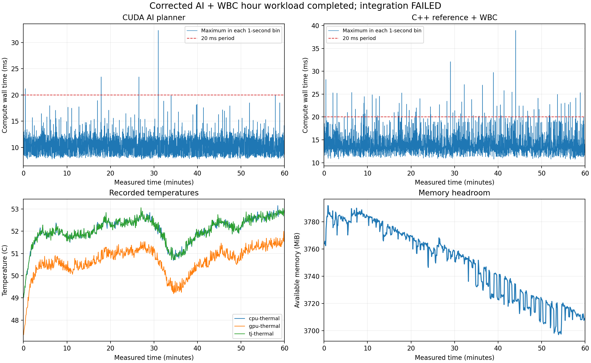

2026-10-18 00:24:56 – 2026-10-18 01:24:56 KST. 5초 예열 후 3600초 측정. Orin Nano Super, 25W, 일반 스케줄러·기본 CPU 배치.
시간 운용: 완료 · 엄격한 통합 판정: 미통과
측정 명령 720,000/720,000개, 계획 179,999/180,000개,
WBC 180,000개. 운용 중 fault 이벤트 0건.
실패한 기존 판정 항목: plan_count, feedback_arrival_count.
입력 센서·관절·접촉 값과 MCU 피드백은 시험용 가상 값이다. 실제 USB 게이트웨이와 NUCLEO-H533을 사용했고 모터 출력은 계속 비활성이다. WBC는 별도 프로세스에서 연속 계산한다. 실로봇 폐루프 제어·G474·CAN·실모터 검증 결과가 아니다.
| 계산 | 표본 | 평균 ms | p99 ms | 최대 ms | 20ms 초과 |
|---|---|---|---|---|---|
| CUDA AI ROS 계획 | 179,999 | 7.816 | 11.222 | 32.314 | 4 |
| C++ WBC | 180,000 | 11.349 | 14.334 | 38.950 | 96 |
| 명령 계산 | 720,000 | 1.468 | 2.069 | 15.627 | 0 |
명령 간격 최대 23.172296ms, 사용 계획 최대 source age 50.0ms. 계획 완료 간 최대 공백 44.964ms. 기존 50ms 신선도 보호 조건과 피드백 표본 수 허용치 ±2개를 유지했다.

예열 포함 명령 720996개 수신·720996개 수락. UART 오류 0, 수신 오버플로 0, 송신 오류 0, missed tick 0, motor apply 0. 측정 구간 피드백 719,968/720,000개, 199.991003Hz, source tick 누락 0개.
준비·측정·저장 구간을 포함한 최소 메모리 여유 3208.2MiB, 관측된 작업 프로세스 RSS 최대 3498.1MiB. 기록된 최고 온도: gpu-thermal 52.00°C, cpu-thermal 53.16°C, soc0-thermal 51.66°C, soc2-thermal 51.78°C, tj-thermal 53.06°C, soc1-thermal 52.38°C. 측정 도구가 기록한 운용 중 1ms 이상 GC pause 0건, 최대 0.000ms.
원본 WBC의 passed는 시간 구간 계산 완료 판정이며, 모든 계산이 20ms 이내라는 뜻은 아니다. 주기 초과 횟수는 위 표와 별도로 그대로 표시했다. 보호 정지가 발생하면 명령은 정지 상태를 유지하고 AI·WBC 부하만 계속하도록 실행했다. 이후 계산을 성공적인 STM 명령 전송으로 집계하지 않았다. 모든 원본 판정과 로그를 보존했다.
[]
| command_source_grid_and_finite | 통과 |
|---|---|
| all_sensor_records_present | 통과 |
| every_measured_command_present | 통과 |
| wbc_grid_and_finite | 통과 |
| every_measured_wbc_present | 통과 |
| wbc_last_compute_in_window | 통과 |
| every_measured_plan_present | 실패 |
| plan_values_finite | 통과 |
| planner_trace_complete_grid | 실패 |
| worker_record_sequence | 통과 |
| worker_records_match_requests | 통과 |
| gateway_records_valid_complete | 통과 |
| gateway_command_counts_agree | 통과 |
| gateway_no_io_errors | 통과 |
| never_armed | 통과 |
| no_mcu_status_fault | 통과 |
| mcu_accepted_every_command | 통과 |
| mcu_io_and_tick_and_motor_apply_zero | 통과 |
| no_feedback_source_tick_gaps | 통과 |
| no_stream_faults | 통과 |
| deferred_logging_cleanup_passed | 통과 |
| original_integration_verdict_matches_gates | 통과 |